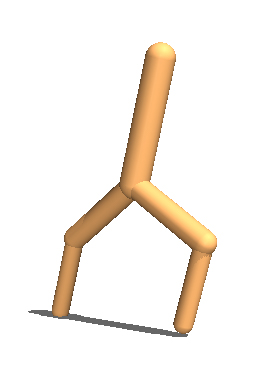
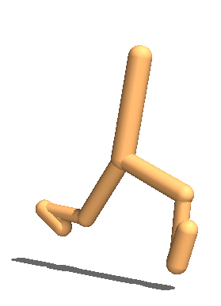
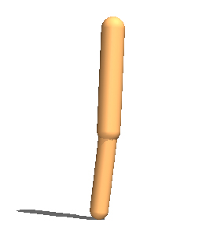
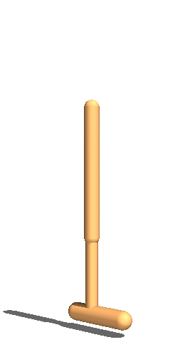

SMP-vanilla
Training hopper 3 and 4 (no flipping) + walker 5 and 7 (no flipping) + ostrich and kangaroo (no flipping)
Reinforcement learning has been considered as learning of control policy to generate a set of actions for a specific agent. Our goal is to discover a more generalizable architecture that can be used in wide-range environments to maximize the shared utility and improve efficiency. The idea of Shared Modular Policies(SMP) attempts to control outputs of all agents with only one single policy architecture. Our intuition in this article is to explore that if we can generally and feasibly apply this approach on different models which are more complex and much similar to real-life creatures. To achieve our purpose, we extend the SMP and derive different environments to evaluate the performance of our new architecture.
Experiments on training agents of different morphologies
| Walker | |||||
 walker_2_main |
 walker_3_main |
 walker_4_main |
 walker_5_main |
 walker_6_main |
 walker_7_main |
|  walker_2_flipped |
 walker_3_flipped |
 walker_4_flipped |
 walker_5_flipped |
 walker_6_flipped |
 walker_7_flipped |
| Hopper | ||
 hopper_3 |
 hopper_4 |
 hopper_5 |
| Animals | |
ostrich |
kangaroo |
Results after training for 3M time steps on selection of hoppers, walkers and animals.
Training hopper 3 and 4 (no flipping) + walker 5 and 7 (no flipping) + ostrich and kangaroo (no flipping)
Training hopper 3 and 4 (no flipping) + walker 5 and 7 (no flipping) + ostrich and kangaroo (no flipping)
Training hopper 3 and 4 (no flipping) + walker 5 and 7 (no flipping) + ostrich and kangaroo (no flipping)